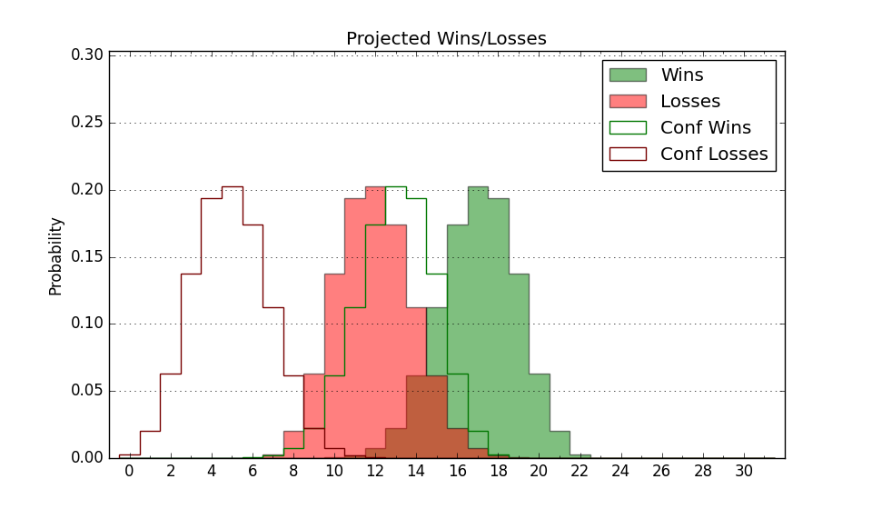

| Home | Game Probabilities | Conferences | Preseason Predictions | Odds Charts | NCAA Tournament |
| City: | Greensboro, North Carolina | |
| Conference: | Southern (1st)
| |
| Record: | 3-0 (Conf) 7-7 (Overall) | |
| Ratings: | Comp.: 3.4 (133rd) Net: 3.3 (142nd) Off: 94.7 (288th) Def: 91.5 (40th) SoR: 0.7 (157th) |
| Remaining | ||||||
|---|---|---|---|---|---|---|
| Date | Opponent | Win Prob | Pred. | |||
| 1/7 | Samford (160) | 70.1% | W 69-63 | |||
| 1/11 | @ VMI (317) | 74.3% | W 71-64 | |||
| 1/14 | @ Furman (135) | 35.5% | L 66-70 | |||
| 1/19 | The Citadel (298) | 88.7% | W 72-58 | |||
| 1/21 | Mercer (198) | 76.4% | W 68-60 | |||
| 1/25 | VMI (317) | 90.8% | W 75-59 | |||
| 1/29 | Furman (135) | 65.2% | W 70-66 | |||
| 2/2 | @ Mercer (198) | 48.7% | L 63-64 | |||
| 2/4 | @ The Citadel (298) | 69.7% | W 68-62 | |||
| 2/7 | East Tennessee St. (268) | 85.7% | W 69-57 | |||
| 2/12 | Wofford (223) | 80.1% | W 69-59 | |||
| 2/15 | @ Samford (160) | 40.8% | L 64-67 | |||
| 2/18 | @ Chattanooga (120) | 32.5% | L 64-69 | |||
| 2/22 | Western Carolina (269) | 85.9% | W 72-59 | |||
| 2/25 | @ East Tennessee St. (268) | 63.8% | W 65-61 | |||
| Previous | Game Score | |||||
| Date | Opponent | Win Prob | Result | Off | Def | Net |
| 11/11 | @Miami FL (56) | 15.9% | L 65-79 | 8.9 | -11.5 | -2.5 |
| 11/17 | Towson (156) | 69.6% | L 53-56 | -17.2 | 0.7 | -16.5 |
| 11/22 | UMBC (253) | 84.7% | W 76-72 | 12.6 | -15.4 | -2.8 |
| 11/25 | (N) Montana St. (116) | 45.8% | W 77-66 | 15.5 | -0.2 | 15.2 |
| 11/26 | (N) Hofstra (113) | 44.9% | L 53-65 | -19.1 | 3.8 | -15.3 |
| 11/27 | (N) Stephen F. Austin (165) | 57.3% | L 58-75 | -13.5 | -15.9 | -29.4 |
| 11/30 | @North Carolina A&T (265) | 63.4% | L 56-73 | -17.6 | -10.8 | -28.4 |
| 12/3 | @Elon (333) | 78.3% | W 65-61 | -5.6 | -0.5 | -6.1 |
| 12/6 | @Arkansas (13) | 7.1% | L 58-65 | -0.9 | 17.3 | 16.4 |
| 12/13 | Marshall (86) | 51.2% | W 75-67 | 14.9 | -0.7 | 14.2 |
| 12/22 | @Eastern Kentucky (234) | 58.8% | L 64-68 | -7.1 | -0.3 | -7.5 |
| 12/29 | @Western Carolina (269) | 64.1% | W 72-47 | 9.5 | 25.8 | 35.3 |
| 12/31 | @Wofford (223) | 54.2% | W 73-64 | 3.2 | 10.6 | 13.8 |
| 1/4 | Chattanooga (120) | 62.1% | W 73-61 | 7.0 | 6.0 | 13.0 |
| Stats & Trends | |||||
|---|---|---|---|---|---|
| Current | Day | Week | Month | Season | |
| Composite | 3.4 | +0.1 | +1.9 | +7.1 | -0.8 |
| Comp Rank | 133 | -3 | +18 | +76 | -16 |
| Net Efficiency | 3.3 | +0.1 | +2.5 | +11.4 | -- |
| Net Rank | 142 | -3 | +17 | +115 | -- |
| Off Efficiency | 94.7 | +0.0 | +1.0 | +5.1 | -- |
| Off Rank | 288 | -- | +15 | +37 | -- |
| Def Efficiency | 91.5 | +0.0 | +1.4 | +6.4 | -- |
| Def Rank | 40 | -1 | +15 | +92 | -- |
| SoS Rank | 133 | +7 | -2 | +66 | -- |
| Exp. Wins | 17.0 | -0.0 | +1.7 | +4.2 | -0.1 |
| Exp. Conf Wins | 13.0 | -0.0 | +1.7 | +4.1 | +2.0 |
| Conf Champ Prob | 52.8 | -0.9 | +26.3 | +48.2 | +32.2 |

| Advanced Stats | ||
|---|---|---|
| Stat | Value | Rank |
| Off Eff FG % | 0.464 | 299 |
| Off Ast Ratio | 0.147 | 128 |
| Off ORB% | 0.233 | 280 |
| Off TO Rate | 0.168 | 233 |
| Off FT Ratio | 0.323 | 148 |
| Def Eff FG % | 0.458 | 56 |
| Def Ast Ratio | 0.125 | 71 |
| Def ORB% | 0.245 | 107 |
| Def TO Rate | 0.172 | 108 |
| Def FT Ratio | 0.314 | 188 |